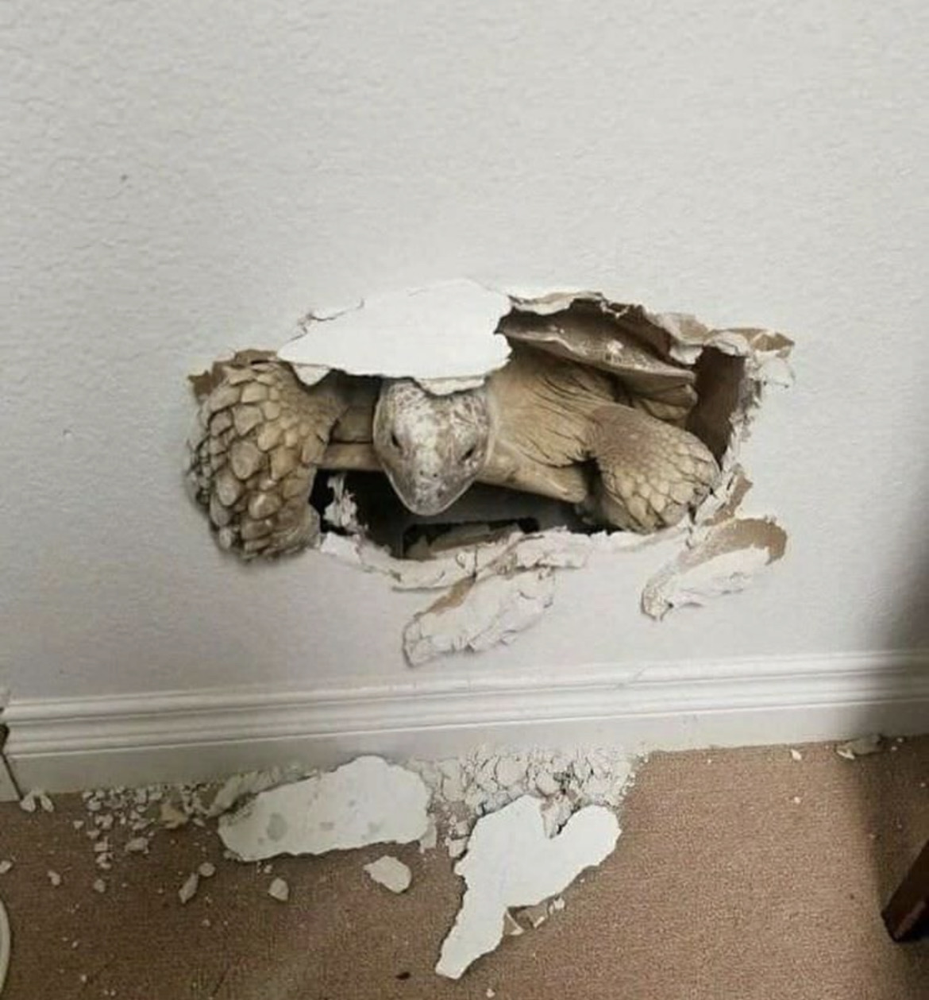

Turtle, The Devourer

This Turtle is doing a thing. Look at him go, annihilating that wall. This is Gort, The Devourer
of Worlds. As we can see here, he hungers. Nothing stops Gort. He takes his time, slowly eating
away at each world he enters. It will likely take him many millenniums to devour our world, so we
have got time before we are doomed. Other than that, he's a nice little guy. He enjoys watching the
Ninja Turtles and long walks in the park.